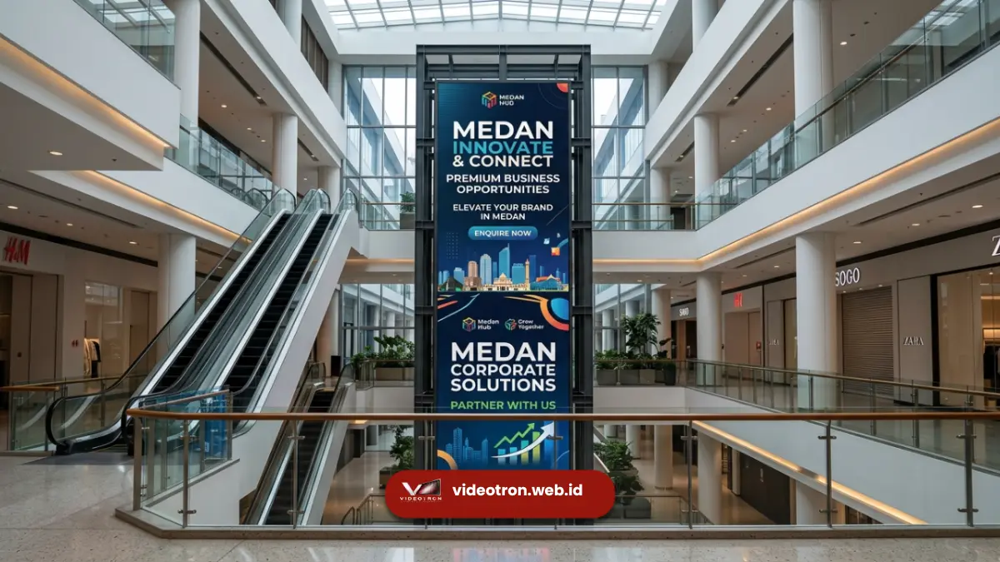

Videotron Medan untuk ruang publik membantu pengelola mal, plaza, dan gedung perkantoran menghadirkan informasi serta konten menarik kepada pengunjung secara real-time.
Kehadiran videotron di titik-titik strategis kawasan publik tidak hanya mempercantik tampilan area, tetapi juga meningkatkan interaksi pengunjung dengan brand atau informasi yang ditampilkan. Kebutuhan ini semakin relevan seiring berkembangnya kawasan komersial dan publik di Medan.
Poin Penting:
- Videotron di ruang publik meningkatkan daya tarik visual sekaligus fungsi informatif kawasan
- Mal dan plaza memanfaatkan videotron untuk promosi tenant dan hiburan pengunjung
- Gedung perkantoran menggunakan videotron pada fasad untuk memperkuat identitas korporat
- Videotron publik dapat menampilkan informasi layanan masyarakat secara efektif
- Penempatan videotron yang strategis meningkatkan interaksi pengunjung dengan konten
- 1. Mengapa Ruang Publik Seperti Mal dan Plaza Membutuhkan Videotron?
- 2. Bagaimana Videotron Dimanfaatkan di Area Atrium Mal?
- 3. Bagaimana Videotron Dimanfaatkan di Area Plaza Kota?
- 4. Bagaimana Videotron Dimanfaatkan pada Fasad Gedung Perkantoran?
- 5. Apa Manfaat Videotron Fasad bagi Citra Perusahaan?
- 6. Apa Manfaat Videotron bagi Pengelola Kawasan Publik Secara Keseluruhan?
- 7. Bagaimana Videotron Mendukung Penyampaian Informasi Layanan Masyarakat?
Mengapa Ruang Publik Seperti Mal dan Plaza Membutuhkan Videotron?
Ruang publik seperti mal dan plaza merupakan area dengan lalu lintas pengunjung yang tinggi, menjadikannya lokasi strategis untuk menampilkan konten visual yang dapat menjangkau banyak orang sekaligus.
Videotron di area ini berfungsi ganda, yaitu sebagai media promosi bagi tenant maupun sebagai elemen dekoratif yang mempercantik suasana kawasan.
Kehadiran videotron juga membantu pengelola kawasan menciptakan pengalaman pengunjung yang lebih dinamis, terutama saat menampilkan konten hiburan, informasi acara, atau promosi musiman yang menarik perhatian pengunjung yang melintas.
Bagaimana Videotron Dimanfaatkan di Area Atrium Mal?
Area atrium mal sering menjadi lokasi favorit untuk pemasangan videotron karena posisinya yang terlihat dari berbagai sudut lantai.
Videotron di area ini umumnya menampilkan konten promosi tenant, jadwal event mal, atau tayangan hiburan yang membuat pengunjung betah berlama-lama di area tersebut.
Bagaimana Videotron Dimanfaatkan di Area Plaza Kota?
Videotron yang dipasang di plaza kota atau ruang terbuka publik umumnya berfungsi menampilkan informasi layanan masyarakat, pengumuman kegiatan daerah, atau konten hiburan komunitas.
Penempatan videotron di area ini membantu menjangkau masyarakat secara luas tanpa memerlukan media distribusi tambahan seperti pamflet.

Bagaimana Videotron Dimanfaatkan pada Fasad Gedung Perkantoran?
Gedung perkantoran di Medan memanfaatkan videotron pada fasad bangunan untuk memperkuat identitas visual perusahaan sekaligus menampilkan pesan korporat kepada publik yang melintas. Videotron pada fasad gedung berfungsi sebagai penanda visual yang membedakan gedung tersebut dari bangunan di sekitarnya.
Apa Manfaat Videotron Fasad bagi Citra Perusahaan?
Videotron fasad memberikan kesempatan bagi perusahaan untuk menampilkan pencapaian, nilai perusahaan, atau kampanye sosial yang memperkuat citra positif di mata publik. Tampilan yang konsisten dan profesional pada fasad gedung turut mencerminkan kredibilitas perusahaan yang menempatinya.
Apa Manfaat Videotron bagi Pengelola Kawasan Publik Secara Keseluruhan?
Bagi pengelola kawasan, videotron memberikan sumber pendapatan tambahan melalui slot iklan yang dapat disewakan kepada tenant maupun pihak ketiga.
Selain itu, videotron juga meningkatkan nilai jual kawasan karena dianggap sebagai fasilitas modern yang mendukung pengalaman pengunjung.
Bagaimana Videotron Mendukung Penyampaian Informasi Layanan Masyarakat?
Videotron di ruang publik dapat difungsikan untuk menampilkan informasi penting seperti imbauan keselamatan, informasi cuaca, atau pengumuman darurat secara cepat kepada masyarakat yang berada di sekitar lokasi.
Fungsi ini menjadikan videotron bukan sekadar media promosi, tetapi juga sarana komunikasi publik yang bermanfaat.
Videotron Medan untuk ruang publik memberikan manfaat ganda, mulai dari mempercantik kawasan, mendukung promosi tenant, memperkuat identitas gedung perkantoran, hingga menjadi sarana informasi layanan masyarakat yang efektif.
Penempatan yang tepat pada titik strategis kawasan akan memaksimalkan manfaat videotron bagi pengelola maupun pengunjung.
Jika Anda mengelola mal, plaza, atau gedung perkantoran di Medan dan membutuhkan videotron yang sesuai dengan karakter kawasan Anda, konsultasikan kebutuhan Anda bersama vendorvideotron.web.id untuk solusi yang tepat.

Hawa Nadira
LED Technology Consultant dan Visual Educator
Konsultan dan spesialis solusi display digital berdedikasi tinggi yang fokus membagikan panduan edukatif mengenai penerapan teknologi layar LED videotron untuk kebutuhan interior modern di Indonesia.